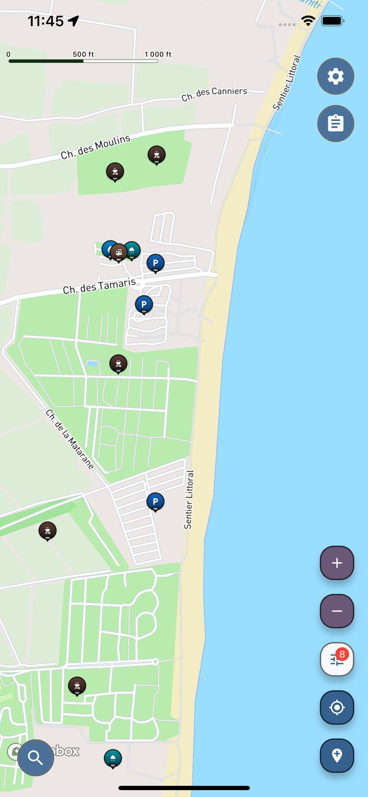

यात्रा उपयोगिता मानचित्र
आपके कैम्पर के लिए पानी, शॉवर और कैंपसाइट्स
दृश्य एकदम सही है और पानी की टंकी खाली है। सर्विस पॉइंट्स, रिफिल टैप्स और शावर फोरमों और केवल सदस्यों के लिए बनी सूचियों में बिखरे हुए हैं, इसलिए वैन लाइफ का व्यावहारिक हिस्सा अपेक्षा से कहीं अधिक खोजबीन मांगता है।
नि:शुल्क · iOS और Android

Screenshot from the Voyager Maps app showing nearby free shower locations.
पिट्च ढूँढना आसान है। पानी ढूँढना आसान नहीं है।
- कैंपसाइट्स हर जगह अच्छी तरह से कवर किए गए हैं। जिन चीज़ों की आपको वास्तव में कमी होती है — ताज़ा पानी, नहाने की सुविधा, लॉन्ड्रेट, टैंक खाली करने की जगह — वे चीज़ें हैं जिन्हें कोई एक साथ सूचीबद्ध नहीं करता।
- सामुदायिक ऐप्स केवल उन स्थानों को जानती हैं जिन्हें किसी ने जोड़ने की जहमत उठाई है, इसलिए लोकप्रिय मार्गों से हटते ही कवरेज कम हो जाती है।
- सामान्य मानचित्र ऐप्स मोटरहोम को कार की तरह मानते हैं और शायद ही कभी दिखाते हैं कि जब आप अपने वाहन में रह रहे हों तो कोई ठहराव आपके काम का है या नहीं।
एक कैम्पर के पास वास्तव में जो कुछ भी खत्म हो जाता है
Voyager Maps व्यावहारिक ठहरावों को एक ही नक्शे पर दिखाता है: दुनिया भर में 190,000 से अधिक कैंपसाइट और कारवां साइटें, 450,000 से अधिक पीने के पानी के स्थान, 36,000 शॉवर और लगभग 20,000 स्व-सेवा लॉन्ड्री — साथ ही रास्ते में शौचालय, ईंधन और पार्किंग की सुविधाएँ।
पीने का पानी, शावर और सेल्फ-सर्विस लॉन्ड्री, जिन्हें आपकी वर्तमान आवश्यकता के अनुसार फ़िल्टर किया गया है।
दुनिया भर में 190,000 से अधिक कैंपसाइट्स और कारवां साइट्स, पूरी तरह से सुसज्जित पिचों से लेकर साधारण रात्रि विश्राम स्थानों तक।
सदस्य सबमिशन के बजाय खुले मानचित्र डेटा पर आधारित, इसलिए व्यस्त मार्गों से बाहर निकलते ही कवरेज समाप्त नहीं होती।
अपनी अगली मंजिल की योजना बनाएँ
अपने मार्ग के पास पानी, शॉवर और कैंपसाइट्स खोजने के लिए ऐप खोलें।
वैन लाइफ, रोड ट्रिप और लंबे दौरों के लिए कैंपरवैन और मोटरहोम सर्विस पॉइंट्स
कैम्परवैन यात्रा कुछ आवश्यक चीज़ों की एक छोटी सूची पर चलती है: ताज़ा पानी, एक काम करने वाला शॉवर, कपड़े धोने की जगह, और रात के लिए ठहरने की जगह। इन्हें ढूंढना शायद ही कभी यात्रा का आरामदायक हिस्सा होता है। मोटरहोम और कैंपर के लिए सर्विस पॉइंट्स का दस्तावेजीकरण असमान रूप से किया गया है — कुछ क्लब साइटों पर सदस्यता के पीछे, कुछ फोरम थ्रेड्स में जो सालों से पुराने हैं, कुछ केवल ऐसी भाषा में जो आप नहीं पढ़ते। परिणाम यह है कि अनुभवी यात्री अक्सर अपने मार्ग की योजना आसपास मौजूद कई स्थानों के बजाय उन कुछ स्थानों के आधार पर बनाते हैं जिन पर वे पहले से ही भरोसा करते हैं।
एक कैम्परवैन सेवा मानचित्र तब अधिक उपयोगी होता है जब यह सदस्य सबमिशन के बजाय खुले मानचित्र डेटा से शुरू होता है, क्योंकि तब कवरेज वास्तविक स्थिति को दर्शाता है, न कि इस बात को कि किसने इसके बारे में पोस्ट किया। Voyager Maps कैंपसाइट, कारवां साइट, पीने के पानी के ठिकाने, शॉवर, सेल्फ-सर्विस लॉन्ड्री, शौचालय, ईंधन और पार्किंग को एक खोजने योग्य नक्शे में लाता है, ताकि आप वहाँ ड्राइव करने से पहले यह जाँच सकें कि आज रात के ठहराव के पास क्या है। चाहे आप पूरे समय यात्रा कर रहे हों, गर्मियों की लंबी यात्रा पर हों, या परिवर्तित वैन में सप्ताहांत बिता रहे हों, व्यावहारिक ठहराव ही वे हैं जिन्हें साथ रखना फायदेमंद होता है।